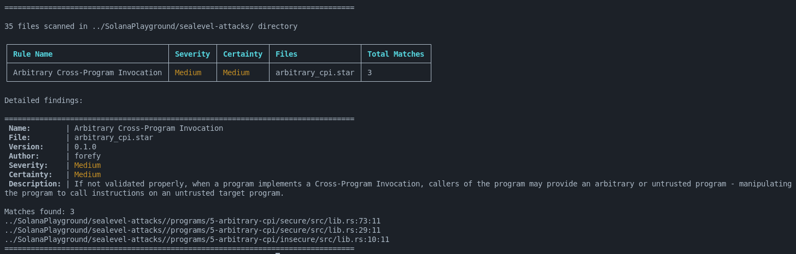
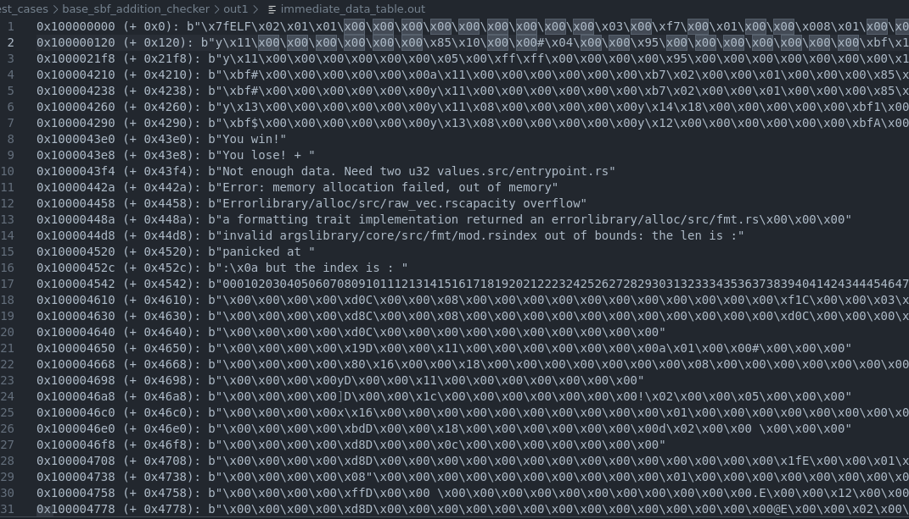
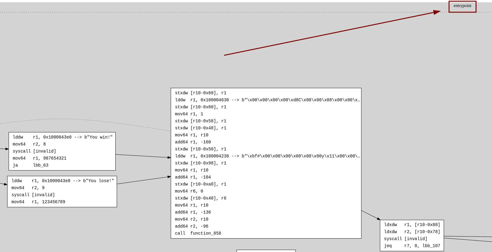
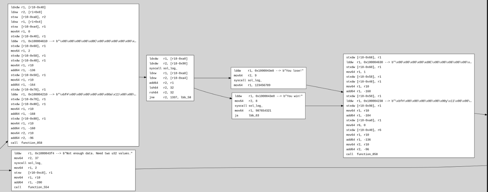
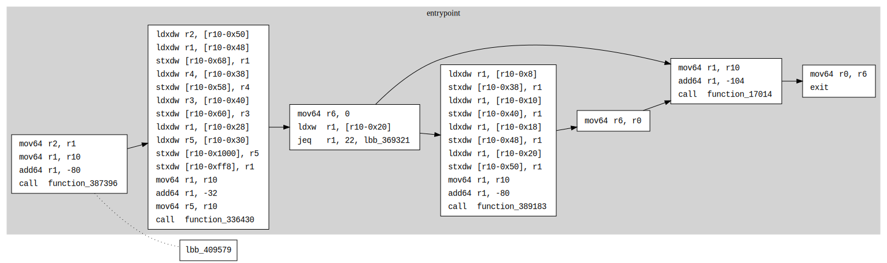
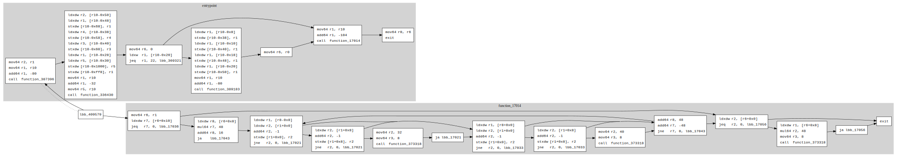

Introduction
sol-azy is a modular, CLI-based toolchain designed for working with Solana programs.
It combines static analysis, reverse engineering, and project building features in one streamlined developer and auditor experience.
What Is sol-azy?
sol-azy provides tools for:
-
Building Solana programs:
- Supports both
Anchorand nativeSBFworkflows - Handles compilation and artifact organization
- Supports both
-
Static Application Security Testing (SAST):
- Uses a custom Starlark-based rule engine
- Applies pattern-matching on the Rust AST
- Enables writing domain-specific security rules
-
Reverse Engineering:
- Disassembles compiled sBPF bytecode
- Exports Control Flow Graphs in
.dotformat - Tracks and formats immediate data from RODATA
- Annotations simplified with Rust-like pseudocode
-
Dotting:
- Lets you manually reinsert functions into reduced CFGs from the full
.dotgraph - Useful for selectively exploring large or complex programs
- Lets you manually reinsert functions into reduced CFGs from the full
-
Fetcher:
- Retrieves deployed
.sobinaries from Solana RPC endpoints using a program ID - Makes it easy to reverse-engineer or audit programs without local builds
- Retrieves deployed
Why sol-azy?
While tools like solana, cargo build-sbf, or anchor build focus on building and deployment, sol-azy targets:
- Security auditing workflows
- Automated code review pipelines
- Understanding bytecode-level structure
- Writing and applying custom static rules
It integrates tightly with Solana's BPF toolchain and syn parsing to provide source-level and binary-level insights in one place.
Project Structure
sol-azy is structured into several engines and CLI commands:
build– Compile programs and prepare artifactssast– Run static analysis with Starlark rulesreverse– Perform bytecode reverse engineeringdotting– Post-process.dotgraphs to manually restore functions in reduced CFGsfetcher– Retrieve deployed on-chain bytecode for offline inspection
See the full CLI Usage section for more details.
Requirements
- Rust + Cargo
- Solana Toolchain (for
cargo build-sbf) - (Optional)
anchorfor Anchor support - [
mdbook] if you are contributing to or browsing the documentation locally
Next Steps
Installation
This page describes how to set up sol-azy and its required dependencies.
1. Prerequisites
Make sure the following tools are installed on your system:
| Tool | Purpose | Install link / command |
|---|---|---|
| Rust | Required to compile sol-azy | https://rustup.rs |
| cargo | Rust package manager | Included with rustup |
| Solana CLI | Needed for SBF builds | https://docs.solana.com/cli/install-solana-cli |
| anchor (optional) | For Anchor-based projects | cargo install --git https://github.com/coral-xyz/anchor anchor-cli --locked |
Verify installations:
rustc --version
cargo --version
solana --version
anchor --version # optional
2. Clone the Repository
git clone https://github.com/FuzzingLabs/sol-azy
cd sol-azy
3. Build the Tool
cargo build --release
The binary will be available at:
./target/release/sol-azy
You can also run sol-azy in development using:
cargo run -- <command> [options]
4. Install mdBook (optional)
To build or view the documentation locally:
cargo install mdbook
mdbook serve docs
Then open http://localhost:3000
Certainly! Here's a "Known Issues & Troubleshooting" section that addresses the Cargo.lock version mismatch and related errors when building Solana programs with Anchor:
Known Issues & Troubleshooting
⚠️ Cargo.lock Version Mismatch Error
When running the build command, you might encounter the following error:
error: failed to parse lock file at: ...
Caused by: lock file version 4 requires -Znext-lockfile-bump
Root Cause
This issue arises due to a mismatch between the Cargo.lock file version and the Rust compiler version used by Solana's build tools. Specifically:
Cargo.lockversion 4 is generated by newer versions of Cargo and requiresrustc1.78 or newer.- However, Solana's
cargo-build-sbfandanchor buildcommands may use an olderrustcversion (e.g., 1.75), leading to this incompatibility.
This discrepancy occurs because Solana's build tools bundle their own Rust toolchain, which might not match the system's Rust version managed by rustup.
Solutions
-
Update Solana CLI and Anchor
Ensure you're using compatible versions of Solana and Anchor that support the newer
Cargo.lockformat:# Update Solana CLI to version 2.1.x or newer sh -c "$(curl -sSfL https://release.anza.xyz/v2.1.0/install)" # Update Anchor CLI cargo install --git https://github.com/coral-xyz/anchor avm --locked avm install latest avm use latestThese updates align the toolchains with the expected
Cargo.lockversion and Rust compiler requirements. -
Manually Downgrade
Cargo.lockVersion (Temporary Workaround)If updating is not feasible, you can temporarily modify the
Cargo.lockfile:-
Open
Cargo.lockin your project root. -
Change the version line from:
version = 4to:
version = 3
Note: This is a temporary fix. Running
cargo updateor similar commands may regenerate theCargo.lockfile with version 4. -
-
Ensure Consistent Rust Toolchain
Verify that the Rust version used by Solana's build tools matches the required version:
# Check Rust version used by Solana's cargo-build-sbf cargo-build-sbf --versionIf the version is older than required, updating the Solana CLI as shown above should resolve the issue.
Additional Resources
By following these steps, you should be able to resolve the Cargo.lock version mismatch error and continue building your Solana programs successfully.
Need Help?
If something doesn't work, check:
- Error messages in the CLI output
- That
cargo,solana, oranchorare in yourPATH - That the bytecode you are reversing is a valid
.sofile, for instance:
test_cases/base_sbf_addition_checker/bytecodes/addition_checker.so: ELF 64-bit LSB shared object, eBPF, version 1 (SYSV), dynamically linked, stripped
test_cases/base_sbf_addition_checker/bytecodes/addition_checker_sbpf_solana.so: ELF 64-bit LSB shared object, eBPF, version 1 (SYSV), dynamically linked, not stripped
You can also open an issue or contact the maintainers.
CLI Usage
sol-azy provides a command-line interface (CLI) for interacting with Solana programs through various operations:
- Building programs
- Running static analysis
- Reversing compiled bytecode
- Modifying CFG .dot files
- Fetching deployed bytecode
- (Future) Fuzzing and testing support
All commands are accessible via:
cargo run -- <command> [options]
IMPORTANT: Using the --release is wayyyyy faster, so if you don’t need debug logs, I’d recommend using it
Available Commands
build
Compiles a Solana project using either Anchor or the native SBF toolchain.
cargo run -- build --target-dir ./my_project --out-dir ./out/
sast
Runs static analysis using Starlark-based rules on the project's source code.
cargo run -- sast --target-dir ./my_project --rules-dir ./rules/ --syn-scan-only
reverse
Performs disassembly, control flow graph (CFG) generation, and immediate value extraction on compiled .so files.
cargo run -- reverse --mode both --out-dir ./out --bytecodes-file ./program.so --labeling
dotting
Allows you to edit a reduced control flow graph (.dot) by selectively re-inserting functions from the full graph.
This is especially useful when working with large binaries where the full CFG is too dense.
cargo run -- dotting \
-c temp_config.json \
-r cfg_reduced.dot \
-f cfg.dot
fetcher
Fetches an on-chain deployed Solana program’s bytecode (.so) using its program ID.
Useful when you want to analyze a program without having its local source or compiled artifact.
cargo run -- fetcher \
--program-id 4MEX8vDCZzAxQkuyd6onJCTeFdof6c1HJgznEtCGqA1N \
--out-dir ./bytecodes/
Optional RPC override:
cargo run -- fetcher \
-p 4MEX8vDCZzAxQkuyd6onJCTeFdof6c1HJgznEtCGqA1N \
-o ./bytecodes/ \
-r https://api.mainnet-beta.solana.com
test (TO DO)
fuzz (TO DO)
Quickstart
To get started with sol-azy:
Related
build Command
The build command compiles Solana programs located in a given target directory.
It supports both Anchor projects and native SBF (Solana BPF) programs.
Usage
cargo run -- build --target-dir ./examples/my_project --out-dir ./out/
Arguments:
--target-dir: Path to the Solana project root.--out-dir: Path where build outputs should be saved.--unsafe-version-switch: (Optional) Flag to auto switch the anchor version
Behavior
sol-azy automatically detects the project type based on its contents:
| Type | Detection Criteria |
|---|---|
| Anchor | Presence of Anchor.toml |
| Native SBF | Cargo.toml includes solana-program |
Depending on the project type, it runs one of:
anchor build --skip-lint(for Anchor)cargo build-sbf(for SBF)
Before building, the tool runs a series of pre-checks:
- Verifies that
cargoand/oranchoris installed - Checks if the output directory exists or creates it
- Validates the project directory structure
Output
By default, the output directory will contain:
- Compiled
.sofile(s) in subdirectories defined by the framework - Any additional files generated by the Solana toolchain
Example
cargo run -- build \
--target-dir test_cases/base_sbf_addition_checker \
--out-dir test_cases/base_sbf_addition_checker/out
This builds a native Solana SBF program and saves the output in ./out.
Related
- Reverse — You can use the compiled
.soas input for disassembly - SAST — Optional static analysis can run on source before or after build
sast Command
The sast command performs Static Application Security Testing on Solana projects using a custom rule engine.
It parses the Rust source code, builds an AST, and applies Starlark-based rules to detect potential vulnerabilities or design patterns.
Usage
cargo run -- sast \
--target-dir ./my_project \
--rules-dir ./rules/ \
--syn-scan-only
Arguments:
--target-dir: Path to the root of the Solana project.--rules-dir: Directory containing.starrule files.--syn-scan-only: If true, only perform syntactic scanning (no build required).
How It Works
The SAST engine:
- Parses all
.rsfiles under the target project (Anchor or native SBF) - Builds a
synAST enriched with source spans - Loads all
.starrule files from the provided rules directory - Applies the rules and collects any matches (vulnerabilities, code smells, patterns)
Rules are written in Starlark, making them:
- Secure
- Sandboxable
- Easy to reason about
Rule File Example
load("syn_ast.star", "syn_ast")
RULE_METADATA = struct(
name = "DangerousPanicUsage",
author = "FuzzingLabs",
version = "0.1",
severity = "High",
certainty = "High",
description = "Detects usage of `panic!` in logic paths",
)
def syn_ast_rule(ast):
return [node for node in ast if node["ident"] == "panic"]
Output
sol-azy prints result in a terminal table or as JSON.
- Rule metadata
- File names
- Matches and associated spans (if available)
Example
cargo run -- sast \
--target-dir test_cases/base_anchor/programs/base_anchor \
--rules-dir ./rules/ \
--syn-scan-only
Related
Fetcher
The fetcher command allows you to retrieve the deployed bytecode of a Solana program and save it locally as fetched_program.so.
This is useful for performing offline analysis, reverse engineering, or static checks without relying on local source code or Solana toolchain.
Usage
cargo run -- fetcher \
--program-id <PROGRAM_ID> \
--out-dir <OUTPUT_DIR> \
[--rpc-url <CUSTOM_RPC_ENDPOINT>]
--program-id: The Solana program ID to fetch.--out-dir: Directory where the bytecode file will be saved (asfetched_program.so).--rpc-url: (Optional) Custom Solana RPC endpoint. Defaults tohttps://api.mainnet-beta.solana.com.
Behavior
- Checks if the output directory exists (if not it creates the folder).
- Validates the program exists on-chain and is executable.
- Writes the bytecode to the specified directory.
- Logs the output file path & the RPC used, including when default is applied.
Example
cargo run -- fetcher \
--program-id srmqPvymJeFKQ4zGQed1GFppgkRHL9kaELCbyksJtPX \
--out-dir ./out
This will fetch the bytecode of the program and save it to ./out/fetched_program.so.
How does it works?
Data Accounts vs Executable Accounts
On Solana every account is just a blob of bytes, but the runtime sets one special flag:
Flag executable | Typical content | File saved by fetcher |
|---|---|---|
true | BPF byte-code of a program (optionally behind an Upgradeable Loader “Program → ProgramData” indirection). | fetched_program.so |
false | Arbitrary user-defined state: SPL token mints, AMM pools, governance realms, Anchor structs, sysvars, … | fetched_account.bin |
fetcher detects this flag automatically:
- If the account is executable it resolves the ProgramData pointer (when present), trims everything before the ELF header, then writes a clean shared object.
- Otherwise it dumps the raw data unchanged.
If you want to look at the code, there are unit tests that illustrate both paths:
test_fetch_executablefetches the Serum DEX v3 program and asserts the ELF header is present.test_fetch_non_executable_sysvarfetches the Sysvar Rent account and checks its 17-byte layout.test_anchor_discriminator_for_onchain_account_infofetches the Marinade State PDA (a non-executable Anchor account) and verifies its first 8 bytes match the Anchor discriminator for the structState.
Why the first 8 bytes matter (Anchor discriminator)
Anchor-based programs prefix every account with a discriminator:
discriminator = sha256("account:<StructName>")[..8]
Those 8 bytes uniquely identify the struct on-chain. fetcher already prints them for any data account it downloads.
In a future version we’ll reverse-map the discriminator to the struct name whenever the hash matches a known Anchor IDL, giving you an instant hint such as:
[fetcher] First 8 bytes (possible Anchor discriminator): 0xd8926b... -> looks like "State" struct name
This automatic recognition will only be possible for accounts that follow the Anchor convention; plain Borsh-only projects will continue to appear as raw bytes.
With these distinctions in mind you can:
- Pull down byte-code for offline disassembly (
.so). - Snapshot any on-chain state for local inspection or unit-test fixtures (
.bin). - Potentially confirm whether a PDA is an Anchor account and which struct it represents. (WIP)
reverse Command
The reverse command performs static reverse engineering on compiled Solana eBPF bytecode (.so files).
It supports disassembly, control flow graph (CFG) generation, and immediate data inspection.
Usage
cargo run -- reverse \
--mode both \
--out-dir ./out/ \
--bytecodes-file ./bytecodes/program.so \
--labeling \
--reduced \
--only-entrypoint
Arguments:
-
--mode: Output mode. One of:disass: Disassemble the bytecodecfg: Export control flow graphboth: Disassemble and export CFG
-
--out-dir: Output directory for result files. -
--bytecodes-file: Path to the compiled.sofile. -
--labeling: Enables use of symbol and section labels when available. -
--reduced: (Optional) Excludes functions defined before the entrypoint (often library or startup code). -
--only-entrypoint: (Optional) Only generates the CFG for the entrypoint function, allowing custom extension via dotting.
Modes
| Mode | Description | Output Files |
|---|---|---|
disass | Disassembles bytecode and extracts immediates | disassembly.out, immediate_data_table.out |
cfg | Builds a .dot graph from instruction flow | cfg.dot |
both | Performs both operations | All of the above |
Output Files
Depending on the selected mode and options, the following files may be generated in --out-dir:
disassembly.out: Human-readable disassembly of eBPF instructionsimmediate_data_table.out: Table of.rodatastrings and constantscfg.dot: Full control flow graph
You can visualize .dot files using tools like:
dot -Tpng cfg.dot -o cfg.png
xdot cfg.dot
⚠️ For very large programs, even the
--reducedversion of the CFG can take significant time to generate due to the size and complexity of the bytecode being analyzed and rendered bydot.
Example
cargo run -- reverse \
--mode both \
--out-dir test_cases/base_sbf_addition_checker/out1/ \
--bytecodes-file test_cases/base_sbf_addition_checker/bytecodes/addition_checker.so \
--labeling \
--reduced
This command will disassemble the program and generate reduced CFG.
Advanced Use Case
If using --only-entrypoint, sol-azy will generate a minimal CFG with only the entrypoint's subgraph.
You can later extend this graph manually using dotting with a JSON list of function clusters to add.
Related
ast-utils Command
The ast-utils command generates and displays the Abstract Syntax Tree (AST) representation of Rust source files in
JSON format.
It uses the syn crate to parse Rust code and syn-serde for JSON serialization.
Usage
cargo run -- ast-utils --file-path ./src/main.rs
Arguments:
--file-path(or ): Path to the Rust source file to parse-f
Behavior
The tool performs the following operations:
- File Reading: Reads the specified Rust source file
- AST Parsing: Uses
syn::parse_file()to generate the AST - JSON Output: Converts the AST to pretty-printed JSON using
syn-serde
The output includes detailed structural information about:
- Function definitions
- Struct and enum declarations
- Import statements
- Type definitions
- Expression trees
- And all other Rust language constructs
Output
The command outputs a JSON representation of the AST directly to stdout. The JSON contains:
- Structural Information: Complete syntax tree with all language constructs
- Pretty Formatting: Human-readable JSON with proper indentation
- Comprehensive Details: All tokens, spans, and syntactic elements
Example
cargo run -- ast-utils --file-path examples/simple_program.rs
This would output something like:
{
"shebang": null,
"attrs": [],
"items": [
{
"Fn": {
"attrs": [],
"vis": {
"Public": {
"pub_token": {
"span": {
"start": 0,
"end": 3
}
}
}
},
"sig": {
"constness": null,
"asyncness": null,
"unsafety": null,
"abi": null,
"fn_token": {
"span": {
"start": 4,
"end": 6
}
},
"ident": "main",
// ... more AST structure
}
}
}
]
}
Use Cases
- Code Analysis: Understanding the structure of Rust source code
- Tooling Development: Building custom analysis tools that work with Rust AST
- Educational: Learning about Rust's syntax tree representation
- Debugging: Inspecting how the compiler parses your code
Related
- SAST — Static analysis that operates on similar AST structures
- Build — Compiles the source files that can be analyzed with ast-utils
Static Analysis
sol-azy includes a flexible static analysis engine designed to scan Solana Rust source code for programs vulnerabilities, code smells, or user-defined patterns.
This engine leverages the Starlark language to express detection logic in .star files, and operates directly on the parsed Rust Abstract Syntax Tree (AST).
Key Concepts
- AST-Based: Operates purely on the Rust syntax tree using the [
syn] crate — no type inference or semantic resolution is performed. (We're working on a future MIR...) - Declarative Rules: Users write
.starscripts to describe what they want to detect. - Safe & Sandboxed: Rules are evaluated inside a restricted Starlark runtime.
Rule Engine Capabilities
The rule engine gives you access to:
- Node inspection (e.g. calls, structs, attributes, visibility)
- Parent-child relationships in AST
- Span and file location tracking
- Metadata enrichment (severity, certainty, etc.)
- JSON-compatible output for integration
Use Cases
- Anchor account declaration validation
- Detection of unsafe CPI (Cross Program Invocation)
- Missing signer or owner checks
- Misuse of
invoke_signedor unchecked sysvars - Custom security checks during CI
Related Pages
Note
The sast engineering core in sol-azy is based on the excellent open-source project
radar by Auditware).
We've been heavily inspired by their approach and wanted a standalone binary capable of it.
Rule Format
sol-azy allows developers and auditors to write custom static analysis rules using the Starlark language — a Python-like configuration language used by projects like Bazel and Buck/Buck2 (Buck2 docs).
These rules are evaluated against the Rust AST (Abstract Syntax Tree) of a Solana program, enabling precise pattern matching to detect vulnerabilities or code smells.
Rule File Structure
A valid rule file is a .star script containing two main parts:
RULE_METADATA— a dictionary with basic infosyn_ast_rule(root)— the entrypoint function, called on each parsed file
RULE_METADATA = {
"version": "0.1.0",
"author": "your-name",
"name": "Rule Name",
"severity": "Low" | "Medium" | "High" | "Critical",
"certainty": "Low" | "Medium" | "High",
"description": "What the rule checks for"
}
Example Rule: Arbitrary CPI
RULE_METADATA = {
"version": "0.1.0",
"author": "forefy",
"name": "Arbitrary Cross-Program Invocation",
"severity": "Medium",
"certainty": "Medium",
"description": "Detects CPIs made to arbitrary or unchecked program IDs."
}
def syn_ast_rule(root: dict) -> list[dict]:
matches = []
raw_nodes = syn_ast.find_raw_nodes(root)
for sink in raw_nodes:
if template_manager.is_matching_template_by_key(sink, "CALL_FN_SOLANAPROGRAM_PROGRAM_INVOKE") and not template_manager.is_matching_template_by_key(sink, "CHECK_SPLTOKEN_ID_CTX_ACCOUNT_AUTHORITY_KEY"):
matches.append(syn_ast.to_result(sink))
return matches
Execution Flow
When sol-azy runs a rule:
- It parses the source code into an AST
- Converts it to JSON
- Passes it as the
rootparameter tosyn_ast_rule - The rule inspects the tree using helper functions (typically, here the
syn_ast.find_raw_nodes()here is used to gather each function independently) - Any result added to
matchesis reported
Helper Libraries
sol-azy ships with built-in sol-azy helpers (written in Starlark):
src/static/starlark_libs/
├── syn_ast.star # AST navigation utilities
└── template_manager.star # Match against common templates
These can be imported and used in any rule. Examples:
raw_nodes = syn_ast.find_raw_nodes(root)
template_manager.is_matching_template_by_key(node, "CHECK_INSTRUCTION_DISCRIMINATOR")
📌 Note: The
template_managerlogic enables reusable pattern detection (documented in Templates).
Writing New Rules
To create a new rule:
- Create a
.starfile in your rules directory - Define
RULE_METADATAandsyn_ast_rule(...) - Use
cargo run -- sast ...to apply the rule
Documentation
- Starlark language reference (GitHub)
- Starlark spec & built-ins
- Starlark in Bazel (docs)
- Starkark in Buck2 (docs)
Related
What Are Templates?
Templates in sol-azy are reusable pattern matchers designed to identify specific AST fragments in Rust source code. They allow users to describe common logic constructs in a simple, declarative way, and can be used as building blocks in Starlark rules or during static pattern matching.
They are especially useful when:
- A pattern appears frequently (e.g.,
ctx.accounts.authority.is_signer) - You want to simplify rule definitions by abstracting repetitive AST shapes
Template Anatomy
Each template includes:
- A
pattern: describing a shape to find in the AST, using simplifiedidents(Rust path segments) - A
priority_rule: used to guide traversal and maintain node order consistency
Example Template
TEMPLATES["CHECK_CTX_ACCOUNT_AUTHORITY_KEY_TOKEN_OWNER"] = {
"pattern": {
"cond": {
"binary": {
"left": {"idents": ["ctx", "accounts", "authority", "key"]},
"op": "!=",
"right": {"idents": ["token", "owner"]},
}
}
},
"priority_rule": ["left", "op", "right"],
}
This matches AST code like:
#![allow(unused)] fn main() { if ctx.accounts.authority.key != &token.owner }
Each template defines a shallow structural pattern over AST nodes of maximum depth 3.
For now, a maximum depth of 3 levels in AST node matching has proven sufficient, but deeper recursive pattern support could be added in the future if needed, directly within the
template_manager.starlogic
Fields Used
idents
Lists of identifier segments (e.g., ["ctx", "accounts", "authority", "key"]) that are matched in order, exactly.
method
Optional field for method calls like .key().
op
Operator such as "==" or "!=".
macro, call, unary, binary, field
These correspond to the Rust AST node types (extracted from syn) that can be matched.
priority_rule
The priority_rule defines the traversal order of keys inside a pattern node.
It ensures that, during linearization of the AST, the relevant fields are matched in the correct order, especially in constructs like:
"priority_rule": ["left", "op", "right"]
This guarantees consistent matching across pattern instances.
Wildcard Support
You can use a wildcard * in the idents list to match any one identifier.
For example:
"idents": ["ctx", "accounts", "*"]
...matches any field under ctx.accounts, such as ctx.accounts.user_a.
Dynamic Template Creation
For convenience, you can add generator for classical templates programmatically, this one is an example:
def generate_call_fn_template(*idents):
return {
"pattern": {
"call": {
"args": "", # ignored for now
"func": {"idents": idents},
}
},
"priority_rule": ["func", "args"],
}
This allows you to match function calls like:
#![allow(unused)] fn main() { solana_program::program::invoke(...) }
and by using the dynamic generation with generate_call_fn_template("solana_program", "program", "invoke"), you don't have to manually write a full template.
Template Testing
The folder test_starlark_condition_template/ contains a test.py script that acts as a an example place for templates.
It defines AST snippets and verifies that each pattern matches correctly:
# if
assert is_matching_template_by_key(AST, "CHECK_CTX_ACCOUNT_AUTHORITY_KEY_TOKEN_OWNER")
assert is_matching_template_by_key(AST2, "CHECK_SPLTOKEN_ID_CTX_ACCOUNT_AUTHORITY_KEY")
assert is_matching_template_by_key(AST3, "CHECK_NOT_CTX_ACCOUNTS_AUTHORITY_ISSIGNER")
assert is_matching_template_by_key(AST4, "CHECK_CTX_ACCOUNTS_WILDCARD_KEY_EQ")
# require
assert is_matching_template_by_key(AST5, "REQUIRE_CTX_ACCOUNTS_RENT_KEY_SYSVAR_RENT_ID")
# called function
assert is_matching_template_by_key(AST2, "CALL_FN_SOLANAPROGRAM_PROGRAM_INVOKE")
# dynamic template
assert is_matching_template(AST2, generate_call_fn_template("solana_program", "program", "invoke"))
Summary of supported pattern types already implemented (can easily be extended)
Templates can express:
- Binary comparisons (
==,!=) - Unary operations (
!some_flag) - Field access (
ctx.accounts.x.is_signer) - Macro calls (
require_eq!(...)) - Method calls (
ctx.accounts.user_a.key()) - Function calls (example:
solana_program::program::invoke(...))
They support wildcards like "*" to generalize over certain path segments.
Usage in Rules
Templates are often used within .star files like this:
if template_manager.is_matching_template_by_key(node, "CHECK_CTX_ACCOUNT_AUTHORITY_KEY_TOKEN_OWNER"):
continue # continue the loop over all nodes, the check is there, so it's probably not vuln
This allows auditors or developers to write rules that check for high-level semantic conditions without diving into low-level AST fields every time.
Advantages
- 🔁 Reusability: templates can be applied across multiple rules
- 🔍 Precision: match deeply nested expressions in structured order
- 🔧 Extensibility: you can write custom templates without editing core logic
Example
🔍 Use Case: Arbitrary CPI Detection with Templates
Consider the following Rust function:
#![allow(unused)] fn main() { pub fn cpi_insecure(ctx: Context<Cpi>, amount: u64) -> ProgramResult { solana_program::program::invoke( &spl_token::instruction::transfer( ctx.accounts.token_program.key, ctx.accounts.source.key, ctx.accounts.destination.key, ctx.accounts.authority.key, &[], amount, )?, &[ ctx.accounts.source.clone(), ctx.accounts.destination.clone(), ctx.accounts.authority.clone(), ], ) } }
This function performs a Cross-Program Invocation (CPI) without validating that ctx.accounts.token_program.key matches the expected program (i.e., spl_token::ID). This is exactly the kind of vulnerability we want to detect using a template like this:
TEMPLATES["CALL_FN_SOLANAPROGRAM_PROGRAM_INVOKE"] = {
"pattern": {
"call": {
"args": "",
"func": {"idents": ["solana_program", "program", "invoke"]},
}
},
"priority_rule": ["func", "args"],
}
What the Template Does
This template matches any call to solana_program::program::invoke(...), regardless of its arguments.
It uses the idents field to match the identifier path in the AST and priority_rule to specify the matching order.
Detection
So the full vulnerable code is:
#![allow(unused)] fn main() { use anchor_lang::prelude::*; use anchor_lang::solana_program; declare_id!("Fg6PaFpoGXkYsidMpWTK6W2BeZ7FEfcYkg476zPFsLnS"); pub mod arbitrary_cpi_secure2 { use super::*; pub fn cpi_secure2(ctx: Context<Cpi>, amount: u64) -> ProgramResult { if &spl_token::ID != ctx.accounts.token_program.key { return Err(ProgramError::IncorrectProgramId); } solana_program::program::invoke( &spl_token::instruction::transfer( ctx.accounts.token_program.key, ctx.accounts.source.key, ctx.accounts.destination.key, ctx.accounts.authority.key, &[], amount, )?, &[ ctx.accounts.source.clone(), ctx.accounts.destination.clone(), ctx.accounts.authority.clone(), ], ) } pub fn cpi_insecure2(ctx: Context<Cpi>, amount: u64) -> ProgramResult { solana_program::program::invoke( &spl_token::instruction::transfer( ctx.accounts.token_program.key, ctx.accounts.source.key, ctx.accounts.destination.key, ctx.accounts.authority.key, &[], amount, )?, &[ ctx.accounts.source.clone(), ctx.accounts.destination.clone(), ctx.accounts.authority.clone(), ], ) } } #[program] pub mod arbitrary_cpi_secure { use super::*; pub fn cpi_secure(ctx: Context<Cpi>, amount: u64) -> ProgramResult { if &spl_token::ID != ctx.accounts.token_program.key { return Err(ProgramError::IncorrectProgramId); } solana_program::program::invoke( &spl_token::instruction::transfer( ctx.accounts.token_program.key, ctx.accounts.source.key, ctx.accounts.destination.key, ctx.accounts.authority.key, &[], amount, )?, &[ ctx.accounts.source.clone(), ctx.accounts.destination.clone(), ctx.accounts.authority.clone(), ], ) } pub fn cpi_insecure(ctx: Context<Cpi>, amount: u64) -> ProgramResult { solana_program::program::invoke( &spl_token::instruction::transfer( ctx.accounts.token_program.key, ctx.accounts.source.key, ctx.accounts.destination.key, ctx.accounts.authority.key, &[], amount, )?, &[ ctx.accounts.source.clone(), ctx.accounts.destination.clone(), ctx.accounts.authority.clone(), ], ) } } #[derive(Accounts)] pub struct Cpi<'info> { source: AccountInfo<'info>, destination: AccountInfo<'info>, authority: AccountInfo<'info>, token_program: AccountInfo<'info>, } }
When we run:
cargo run --release -- \
sast \
--target-dir ../SolanaPlayground/sealevel-attacks/ \
--rules-dir rules/syn_ast

sol-azy successfully detects three instances of the vulnerability, reported as:
../SolanaPlayground/sealevel-attacks//programs/5-arbitrary-cpi/secure/src/lib.rs:73:11
../SolanaPlayground/sealevel-attacks//programs/5-arbitrary-cpi/secure/src/lib.rs:29:11
../SolanaPlayground/sealevel-attacks//programs/5-arbitrary-cpi/insecure/src/lib.rs:10:11
Two are found in the secure/ module (the source code provided above), and one in the insecure/ module, which defines the same logic in a separate file with 1 vulnerable function.
Summary
Thanks to this template-based pattern matcher, sol-azy is able to:
- Statistically identify unvalidated CPI targets,
- Highlight affected source locations with precision,
- Save analysts from manually combing through source code.
💡 Tip: You can dynamically create templates like this using
generate_call_fn_template(...)to reduce duplication. For instance:is_matching_template(AST, generate_call_fn_template("solana_program", "program", "invoke"))This matches the same call pattern with minimal boilerplate.
Starlark Libraries References
AST Node Structure
An AST node represents a single element in the Abstract Syntax Tree with a standardized structure. Each node contains: a
raw_node with the original AST data, an access_path string representing the node's location in the tree, metadata
for additional information like position and mutability flags, children and parent references for tree navigation,
ident for the node's identifier, and optional fields like args for function arguments and root to indicate if it's
a root node. This consistent structure facilitates tree traversal and pattern matching operations throughout the
codebase.
{
"raw_node": {}, # Original AST data from parser
"access_path": "",# Path string showing location in tree (e.g. "root.expr.binary.left")
"metadata": {}, # Additional data like position and mutability flags
"children": [], # List of child nodes
"parent": {}, # Reference to parent node
"root": False, # Boolean indicating if this is a root node
"args": [], # Function arguments (if applicable)
"ident": "" # Node identifier/name
}
Syn AST Utilities
The Syn AST utilities module provides functions for working with Rust's syntactic ASTs, particularly for security analysis.
Core Components
Constants
EMPTY_ACCESS_PATH,EMPTY_IDENT,EMPTY_METADATA,EMPTY_NODE: Default values for empty nodes
Node Management
new_ast_node(syn_ast_node, metadata, access_path): Creates a new AST nodeast_node_add_child(node, child): Adds a child to an AST nodeast_node_add_children(node, children): Adds multiple children to an AST nodeto_result(node): Converts a node to a result formatfilter_result(result): Filters duplicate results
Tree Traversal
traverse_tree(node, collector): Traverses a tree with a collector functionflatten_tree(root): Flattens a tree into a list of nodesfirst(nodes): Returns the first node from a list
Node Finding Functions
find_by_child(self, child_ident): Finds nodes by child identifierfind_chained_calls(self, *idents): Finds chained method callsfind_macro_attribute_by_names(self, *idents): Finds macro attributes by namefind_by_similar_access_path(self, access_path, stop_keyword): Finds nodes with similar access pathsfind_comparisons(self, ident1, ident2): Finds comparisons between two identifiersfind_comparison_to_any(self, ident): Finds comparisons involving a specific identifierfind_functions_by_names(self, *function_names): Finds functions by namefind_by_names(self, *idents): Finds nodes by identifier namesfind_method_calls(self, caller, method): Finds method calls on a specific callerfind_assignments(self, ident, value_ident): Finds assignment operationsfind_mutables(self): Finds mutable variablesfind_account_typed_nodes(self, ident): Finds account-typed nodesfind_member_accesses(self, ident): Finds member accesses for a specific identifier
AST Preparation
find_ident_src_node(sub_data, sub_access_path, metadata): Finds identifier source nodesfind_fn_names(node): Extracts function names from an ASTfind_raw_nodes_by_fn_names(node, func_names): Finds raw nodes by function namesfind_raw_nodes(ast): Finds all raw nodes in an ASTprepare_syn_ast(ast, access_path, parent): Prepares a Syn AST for analysisprepare_ast(ast): Main function to prepare an AST for analysis
Usage Examples
For finding specific code patterns:
This documentation provides an overview of the functionality available in these Starlark libraries, which are designed for security analysis of Solana programs by detecting specific code patterns in their AST representations.
Reverse Engineering
sol-azy provides a reverse engineering module tailored for Solana programs compiled to eBPF.
It allows you to disassemble .so binaries, extract control flow, and track embedded immediate data.
This tooling is especially useful for:
- Security researchers auditing deployed programs
- Developers understanding bytecode behavior
- Anyone comparing compiled output to source logic
Features
- Disassembler: Converts raw bytecode into human-readable SBPF instructions + Rust-like comparisons
- Control Flow Graph: Generates
.dotfiles representing program structure - Immediate Tracker: Resolves strings or data loaded from
.rodata
Each of these features is accessible through the reverse CLI command.
Input
The reverse engine operates on compiled Solana .so files, typically generated by:
anchor build
# or
cargo build-sbf
You pass the .so file using --bytecodes-file.
Output
Depending on the selected mode, sol-azy produces one or more of the following:
| File | Description |
|---|---|
disassembly.out | Instruction-by-instruction disassembly |
immediate_data_table.out | Extracted strings or data from RODATA |
cfg.dot | Control flow graph (Graphviz-compatible) |
You can visualize cfg.dot with:
dot -Tpng cfg.dot -o cfg.png
Subsections
To dive deeper into how reverse analysis works in sol-azy:
Usage Example
cargo run -- reverse \
--mode both \
--out-dir ./out/ \
--bytecodes-file ./bytecodes/program.so \
--labeling
Compatibility
- Supports
.sofiles compiled using Solana's official toolchain - Compatible with both Anchor and native SBF programs
- Works on programs targeting
solana_rbpf/solana_sbpf
Note
The reverse engineering core in sol-azy is based on the excellent open-source project
sbpf-solana by Anza (anza-xyz).
We have modified and extended its disassembly and control flow analysis logic to better fit sol-azy’s needs, especially for static audits, immediate tracking, and custom export formats.
Reverse Overview
This section explains how sol-azy performs static reverse engineering on Solana programs compiled to SBF.
The reverse module combines disassembly, control flow analysis, and memory inspection, using a customized static analysis engine adapted from sbpf-solana.
How It Works
-
ELF Parsing
sol-azy loads the
.sobytecode using Solana’sExecutableabstraction (fromsolana_rbpf), which parses the ELF and loads its segments (e.g.,.text,.rodata). -
Instruction Analysis
Using the
Analysisstruct fromsbpf-solana, the tool walks through all valid instruction addresses, building:- A disassembled instruction list
- Basic block boundaries
- Cross-references and destination mappings
-
Immediate Tracking
When
LD_DW_IMMinstructions referenceMM_RODATA, sol-azy tries to:- Interpret the referenced memory slice
- Associate it with a
MOV64_IMMorMOV32_IMMdefining its length - Format the result as a printable string (e.g.,
b"hello world")
-
Graph Generation
For control flow graphs, each basic block becomes a node in a
.dotfile, with edges linking jumps, calls, and returns.
Internal Components
ImmediateTracker: Tracks memory ranges referenced by LD_DW_IMMget_string_repr: Converts slices from.rodatainto readable stringsexport_cfg_to_dot: Emits Graphviz-compatible control flow graphsdisassemble_wrapper: Main entrypoint for disassembly + data extraction
ReverseOutputMode
The CLI dispatches different logic depending on this enum:
#![allow(unused)] fn main() { pub enum ReverseOutputMode { Disassembly(String), ControlFlowGraph(String), DisassemblyAndCFG(String), } }
Example Workflow (Recap)
cargo run -- reverse \
--mode both \
--out-dir ./out/ \
--bytecodes-file ./bytecodes/program.so \
--labeling
Disassembly
sol-azy statically disassembles compiled Solana eBPF programs into a readable, instruction-by-instruction view.
This view is enhanced with immediate data decoding, especially for strings loaded from .rodata.
Overview
The disassembly engine in sol-azy builds upon sbpf-solana's instruction decoder.
It adds layers of audit-focused context by:
- Labeling basic blocks (e.g.,
lbb_42) - Resolving immediate values from
.rodata - Emitting annotated output into
disassembly.out - Adding Rust-like comparison for better understanding
Example
Here’s a disassembly snippet produced by sol-azy:
entrypoint:
mov64 r2, r1 r2 = r1
mov64 r1, r10 r1 = r10
add64 r1, -96 r1 += -96 /// r1 = r1.wrapping_add(-96 as i32 as i64 as u64)
call function_308
ldxdw r7, [r10-0x48]
ldxdw r8, [r10-0x58]
ldxdw r1, [r10-0x38]
mov64 r2, 8 r2 = 8 as i32 as i64 as u64
jgt r2, r1, lbb_91 if r2 > r1 { pc += 79 }
ldxdw r1, [r10-0x40]
ldxw r2, [r1+0x0]
stxw [r10-0xa8], r2
ldxw r1, [r1+0x4]
stxw [r10-0xa4], r1
mov64 r1, 0 r1 = 0 as i32 as i64 as u64
stxdw [r10-0x40], r1
lddw r1, 0x100004610 --> b"\x00\x00\x00\x00\xd0C\x00\x00\x08\x00\x00\x00\x00\x00\x00\x00\x00\x00\x00… r1 load str located at 4294985232
stxdw [r10-0x60], r1
mov64 r1, 2 r1 = 2 as i32 as i64 as u64
stxdw [r10-0x58], r1
stxdw [r10-0x48], r1
mov64 r1, r10 r1 = r10
add64 r1, -136 r1 += -136 /// r1 = r1.wrapping_add(-136 as i32 as i64 as u64)
stxdw [r10-0x50], r1
mov64 r1, r10 r1 = r10
add64 r1, -164 r1 += -164 /// r1 = r1.wrapping_add(-164 as i32 as i64 as u64)
stxdw [r10-0x78], r1
lddw r1, 0x100004210 --> b"\xbf#\x00\x00\x00\x00\x00\x00a\x11\x00\x00\x00\x00\x00\x00\xb7\x02\x00\x0… r1 load str located at 4294984208
stxdw [r10-0x70], r1
stxdw [r10-0x80], r1
mov64 r1, r10 r1 = r10
add64 r1, -168 r1 += -168 /// r1 = r1.wrapping_add(-168 as i32 as i64 as u64)
stxdw [r10-0x88], r1
mov64 r1, r10 r1 = r10
add64 r1, -160 r1 += -160 /// r1 = r1.wrapping_add(-160 as i32 as i64 as u64)
mov64 r2, r10 r2 = r10
add64 r2, -96 r2 += -96 /// r2 = r2.wrapping_add(-96 as i32 as i64 as u64)
call function_858
ldxdw r1, [r10-0xa0]
ldxdw r2, [r10-0x90]
syscall [invalid]
ldxw r1, [r10-0xa8]
ldxw r2, [r10-0xa4]
add64 r2, r1 r2 += r1 /// r2 = r2.wrapping_add(r1)
lsh64 r2, 32 r2 <<= 32 /// r2 = r2.wrapping_shl(32)
rsh64 r2, 32 r2 >>= 32 /// r2 = r2.wrapping_shr(32)
jne r2, 1337, lbb_58 if r2 != (1337 as i32 as i64 as u64) { pc += 6 }
lddw r1, 0x1000043e0 --> b"You win!" r1 load str located at 4294984672
mov64 r2, 8 r2 = 8 as i32 as i64 as u64
syscall [invalid]
mov64 r1, 987654321 r1 = 987654321 as i32 as i64 as u64
ja lbb_63 if true { pc += 5 }
lbb_58:
lddw r1, 0x1000043e8 --> b"You lose!" r1 load str located at 4294984680
mov64 r2, 9 r2 = 9 as i32 as i64 as u64
syscall [invalid]
mov64 r1, 123456789 r1 = 123456789 as i32 as i64 as u64
Annotating Immediate Loads
Instructions like:
lddw r1, 0x1000043e0
point into .rodata. sol-azy:
- Checks if
imm >= MM_RODATA_START - Extracts the corresponding bytes from the
.so - Uses the next
MOV64_IMM(here,mov64 r2, 8) to determine the length - Displays a byte string:
b"You win!"
This process is handled by:
#![allow(unused)] fn main() { pub fn update_string_resolution(program: &[u8], insn: &Insn, next_insn_wrapped: Option<&Insn>, register_tracker: &mut RegisterTracker) -> String }
Support for sBPF v2+: Address Construction via
mov32+hor64In sBPF version 2 and above, the use oflddwfor loading 64-bit constants is forbidden. Instead, addresses are manually constructed using:mov32 r1, 0x3000 ; load lower 32 bits hor64 r1, 0x10000000 ; set upper 32 bits → r1 = 0x1000000000003000sol-azy handles this by:
- Tracking register values using a
RegisterTracker- Do an "emulation" of
movandhor64- Resolving loads like
ldxdw r2, [dst + off]wheredst + offpoints into.rodata- Extracting and decoding the pointed memory, same as for
lddwThis lets the disassembler annotate pointer-based loads even when addresses are assembled dynamically.
Visualization
Here is an example of a control flow graph with disassembly and immediate data decoded:

- Arrows represent jumps or branches
- Blocks show disassembled instructions
--> b"...string..."indicates.rodatainterpretation
Output Files
When running:
cargo run -- reverse --mode disass --out-dir ./out --bytecodes-file ./program.so
You get:
| File | Description |
|---|---|
disassembly.out | Main instruction listing with annotations |
immediate_data_table.out | All tracked immediate memory ranges |
Example from immediate_data_table.out:
0x1000043e0 (+ 0x43e0): b"You win!"
0x1000043e8 (+ 0x43e8): b"You lose!"
Tips
- Enable
--labelingto auto-gen labels. - Use
mode = bothto get disassembly + CFG together.
Related
Immediate Data Tracking
sol-azy performs tracking of immediate values loaded from .rodata via LD_DW_IMM instructions.
This feature is crucial to recover strings, error messages, and embedded constants that are otherwise opaque in the bytecode.
How it works
Solana eBPF programs often use this pattern to load a constant string:
lddw r1, 0x1000043e8
mov64 r2, 9
- The
lddwinstruction loads an offset in.rodata - The
mov64gives a length (usually in bytes) - sol-azy uses these two to extract a slice of memory and decode it
If the memory region looks printable (ASCII-compatible), it is rendered as a string like:
b"You lose!"
Otherwise, a hex-escaped byte string is emitted.
Output File: immediate_data_table.out
This file lists all detected .rodata ranges accessed via LD_DW_IMM, whether or not they were also used in disassembly.
Format
Each line contains:
<absolute_address> (+ <relative_offset>): <decoded_bytes>
Example:
0x1000043e0 (+ 0x43e0): b"You win!"
0x1000043e8 (+ 0x43e8): b"You lose!"
0x100004434 (+ 0x434): b"Not enough data. Need two u32 values.src/entrypoint.rs"
The
relative_offsetis computed relative toMM_RODATA_START, and is used to index into the ELF's.rodatasection.
Visual Reference
Here's a screenshot of a real immediate_data_table.out file generated from a test case:

We can see:
- Success and failure strings:
"You win!","You lose!" - Panic messages
- Rust format strings
- Even full numeric patterns (e.g.
"00010203...")
Behind the scenes
The logic is handled by this function:
#![allow(unused)] fn main() { fn disassemble_wrapper( program: &[u8], analysis: &mut Analysis, imm_tracker_wrapped: Option<&mut ImmediateTracker>, path: P, ) }
Each LD_DW_IMM is analyzed, and its value is registered using:
#![allow(unused)] fn main() { imm_tracker.register_offset(insn.imm as usize); }
Then, for each tracked range:
- The
programis sliced using offset logic - The result is passed to:
#![allow(unused)] fn main() { pub fn format_bytes(slice: &[u8]) -> String }
which escapes non-printables and prints ASCII as-is.
LD_DW_IMM: Key Instructions and Address Keys
The tracking system is triggered exclusively by LD_DW_IMM instructions, which are used to load 64-bit constants.
When such an instruction loads an address greater than or equal to MM_RODATA_START, sol-azy considers it a .rodata access.
These addresses become the keys of the immediate_data_table.out output.
Example:
lddw r1, 0x1000043e0 ; ← This address becomes a key
mov64 r2, 8 ; ← Length hint
This results in:
0x1000043e0 (+ 0x43e0): b"You win!"
Range Truncation: Avoiding Overlaps
In programs with many LD_DW_IMM, multiple memory regions may point into the same .rodata segment.
To avoid overlap between two string regions, sol-azy performs forward truncation:
- It registers each
LD_DW_IMMaddress (new_start) - It finds the next closest start already known
- It truncates any overlapping previous entry so that no two extracted ranges overlap
This ensures that the memory region allocated for one string or constant does not accidentally contain bytes meant for another.
⚠️ Important Note on Partial Overlaps
The truncation mechanism ensures that two tracked .rodata regions do not overlap, but this does not imply that only the non-overlapping portion of earlier data is relevant.
For example:
- A
lddwat0x1loads 4 bytes of useful data. - Later, a
lddwat0x3uses only the high bits (e.g., last 2 bytes).
Even if these regions partially overlap in memory, the system still treats 0x1 as a distinct valid address for its own usage.
This means:
- The data at
0x1is still considered to start at0x1. - The data at
0x3is separately tracked, even if it falls inside a previously registered range.
The truncation is only used to split visible ranges in the output, not to reinterpret or cut off the semantics of earlier loads.
Example
Suppose:
lddw r1, 0x1000043e0 ; key #1
lddw r2, 0x1000043e8 ; key #2, appears later in bytecode
Even if the length for key #1 is unclear (or too long), sol-azy will truncate its range to stop at 0x1000043e8.
This avoids having "You win!" + "You lose!" accidentally merged into one blob, since both of them will be used independently by separate LD_DW_IMM instructions.
Support for sBPF v2+: Address Construction via
mov32+hor64In sBPF version 2 and above, the use oflddwfor loading 64-bit constants is forbidden. Instead, addresses are manually constructed using:mov32 r1, 0x3000 ; load lower 32 bits hor64 r1, 0x10000000 ; set upper 32 bits → r1 = 0x1000000000003000sol-azy handles this by:
- Tracking register values using a
RegisterTracker- Do an "emulation" of
movandhor64- Resolving loads like
ldxdw r2, [dst + off]wheredst + offpoints into.rodata- Extracting and decoding the pointed memory, same as for
lddwThis lets the disassembler annotate pointer-based loads even when addresses are assembled dynamically.
Internal Implementation
The tracking structure is a BTreeMap<usize, usize>:
#![allow(unused)] fn main() { pub struct ImmediateTracker { ranges: BTreeMap<usize, usize>, // start => end } }
Each register_offset(new_start) will:
- Locate the next start value already in
ranges - Set
new_end = next_start - Truncate any existing range that would overlap with
new_start
This is enforced even if the memory contents could technically overlap — correctness is prioritized.
When this matters
This tracking is especially useful when:
- The program includes panic messages
- You want to recover hardcoded strings (e.g.
"owner mismatch") - You're analyzing solana_program syscalls with string-based I/O
- You want to reverse undocumented or obfuscated logic
Tips
- Use
--mode disassor--mode bothto enable this feature - If a string appears truncated, check the corresponding
mov64for its length - If no
mov64follows alddw, the default read length is ~50 bytes for the CFG rendering
Related
Control Flow Graph (CFG)
sol-azy can extract a static control flow graph (CFG) from a compiled Solana eBPF program.
The output is a Graphviz-compatible .dot file representing function-level control flow between basic blocks.
This is useful for:
- Visualizing branching behavior
- Locating unreachable code
- Detecting loop structures
- Understanding high-level logic without source code
Overview
The CFG is generated via:
#![allow(unused)] fn main() { pub fn export_cfg_to_dot( program: &[u8], analysis: &mut Analysis, path: impl AsRef<Path>, reduced: bool, only_entrypoint: bool, ) -> std::io::Result<()> }
sol-azy uses the static Analysis engine to:
- Identify all functions
- Segment them into basic blocks
- Record all dominators and edges
- Render each function as a
subgraph clusterin Graphviz.dotsyntax
Filtering the graph
--reduced: excludes library functions that appear before the program’s entrypoint, reducing noise.--only-entrypoint: includes only the function where execution starts, allowing for very focused manual exploration (e.g., withdotting).
Structure of the Graph
Each basic block is rendered as a node with label:
lbb_<id> [label=<<table>...</table>>];
- The instruction list is printed line-by-line
- If a string is found via
LD_DW_IMM+MOV64_IMM, it’s appended with:--> b"..." - Long strings are truncated
Resolving Edges
Edges are derived from instruction flow and jump destinations:
- Conditional jumps produce two outgoing edges
- Unconditional jumps produce one
- Return or syscall ends a block
- Dominator relationships (parent-child) are shown with dotted arrows (
style=dotted; arrowhead=none)
Detailed behavior:
sol-azy draws edges based on:
jne,jeq, etc. → conditional edgesja(jump always) → unconditionalcall,exit, andret→ no outgoing edgedominator_parent→ rendered with:lbb_A -> lbb_B [style=dotted; arrowhead=none];
Example (DOT snippet)
Here’s a raw .dot snippet generated by sol-azy:
lbb_58 [label=<<table border="0" cellborder="0" cellpadding="3">
<tr><td align="left">lddw</td><td align="left">r1, 0x1000043e8 --> b"You lose!"</td></tr>
<tr><td align="left">mov64</td><td align="left">r2, 9</td></tr>
<tr><td align="left">syscall</td><td align="left">[invalid]</td></tr>
<tr><td align="left">mov64</td><td align="left">r1, 123456789</td></tr>
</table>>];
Graphviz will render this as a block node with a 4-row table inside.
How sol-azy Generates It
CFG generation is implemented in:
#![allow(unused)] fn main() { pub fn export_cfg_to_dot( program: &[u8], analysis: &mut Analysis, path: impl AsRef<Path>, ) }
It walks:
- The
analysis.functionsmap - Each function’s set of
cfg_nodes - Each node’s instructions (via
analysis.instructions) - Control destinations (e.g.,
jne,ja,call) - Dominator relationships (
cfg_node.dominator_parent)
The layout is rendered using Graphviz-style clusters:
subgraph cluster_42 {
label="function_name";
lbb_42 [ ... ];
}
Strings from .rodata
CFG generation is enhanced by the same string resolution logic used in disassembly:
#![allow(unused)] fn main() { fn get_string_repr( program: &[u8], insn: &Insn, next_insn: Option<&Insn> ) -> String }
This makes string loads from .rodata visible directly in the graph, so when an instruction like::
lddw r1, 0x1000043e8
is followed by:
mov64 r2, 9
sol-azy uses this to resolve:
b"You lose!"
It is rendered like this:
<td align="left">r1, 0x1000043e8 --> b"You lose!"</td>
This makes constant decoding directly visible in the graph.
Rendering the Graph
Once cfg.dot is generated, use:
dot -Tsvg cfg.dot -o cfg.svg
xdot cfg.dot # for interactive navigation
⚠️ For very large programs, even the
--reducedversion of the CFG can take significant time to generate due to the size and complexity of the bytecode being analyzed and rendered bydot.
Function Grouping
Each function is placed into a subgraph cluster for clarity. This helps:
- Separate function-level CFGs
- Navigate large programs
- Find easily the main part
Entrypoint Example:
subgraph cluster_3 {
label="entrypoint";
tooltip=lbb_3;
lbb_3 [label=<<table border="0" cellborder="0" cellpadding="3"><tr><td align="left">mov64</td><td align="left">r2, r1</td></tr><tr><td align="left">mov64</td><td align="left">r1, r10</td></tr><tr><td align="left">add64</td><td align="left">r1, -96</td></tr><tr><td align="left">call</td><td align="left">function_308</td></tr></table>>];
lbb_7 [label=<<table border="0" cellborder="0" cellpadding="3"><tr><td align="left">ldxdw</td><td align="left">r7, [r10-0x48]</td></tr><tr><td align="left">ldxdw</td><td align="left">r8, [r10-0x58]</td></tr><tr><td align="left">ldxdw</td><td align="left">r1, [r10-0x38]</td></tr><tr><td align="left">mov64</td><td align="left">r2, 8</td></tr><tr><td align="left">jgt</td><td align="left">r2, r1, lbb_91</td></tr></table>>];
lbb_91 [label=<<table border="0" cellborder="0" cellpadding="3"><tr><td align="left">lddw</td><td align="left">r1, 0x1000043f4 --> b"Not enough data. Need two u32 values."</td></tr><tr><td align="left">mov64</td><td align="left">r2, 37</td></tr><tr><td align="left">syscall</td><td align="left">[invalid]</td></tr><tr><td align="left">mov64</td><td align="left">r1, 2</td></tr><tr><td align="left">stxw</td><td align="left">[r10-0xc8], r1</td></tr><tr><td align="left">mov64</td><td align="left">r1, r10</td></tr><tr><td align="left">add64</td><td align="left">r1, -200</td></tr><tr><td align="left">call</td><td align="left">function_554</td></tr></table>>];
lbb_100 [label=<<table border="0" cellborder="0" cellpadding="3"><tr><td align="left">mov64</td><td align="left">r6, r0</td></tr><tr><td align="left">jeq</td><td align="left">r7, 0, lbb_107</td></tr></table>>];
lbb_12 [label=<<table border="0" cellborder="0" cellpadding="3"><tr><td align="left">ldxdw</td><td align="left">r1, [r10-0x40]</td></tr><tr><td align="left">ldxw</td><td align="left">r2, [r1+0x0]</td></tr><tr><td align="left">stxw</td><td align="left">[r10-0xa8], r2</td></tr><tr><td align="left">ldxw</td><td align="left">r1, [r1+0x4]</td></tr><tr><td align="left">stxw</td><td align="left">[r10-0xa4], r1</td></tr><tr><td align="left">mov64</td><td align="left">r1, 0</td></tr><tr><td align="left">stxdw</td><td align="left">[r10-0x40], r1</td></tr><tr><td align="left">lddw</td><td align="left">r1, 0x100004610 --> b"\x00\x00\x00\x00\xd0C\x00\x00\x08\x00\x00\x…</td></tr><tr><td align="left">stxdw</td><td align="left">[r10-0x60], r1</td></tr><tr><td align="left">mov64</td><td align="left">r1, 2</td></tr><tr><td align="left">stxdw</td><td align="left">[r10-0x58], r1</td></tr><tr><td align="left">stxdw</td><td align="left">[r10-0x48], r1</td></tr><tr><td align="left">mov64</td><td align="left">r1, r10</td></tr><tr><td align="left">add64</td><td align="left">r1, -136</td></tr><tr><td align="left">stxdw</td><td align="left">[r10-0x50], r1</td></tr><tr><td align="left">mov64</td><td align="left">r1, r10</td></tr><tr><td align="left">add64</td><td align="left">r1, -164</td></tr><tr><td align="left">stxdw</td><td align="left">[r10-0x78], r1</td></tr><tr><td align="left">lddw</td><td align="left">r1, 0x100004210 --> b"\xbf#\x00\x00\x00\x00\x00\x00a\x11\x00\x00\…</td></tr><tr><td align="left">stxdw</td><td align="left">[r10-0x70], r1</td></tr><tr><td align="left">stxdw</td><td align="left">[r10-0x80], r1</td></tr><tr><td align="left">mov64</td><td align="left">r1, r10</td></tr><tr><td align="left">add64</td><td align="left">r1, -168</td></tr><tr><td align="left">stxdw</td><td align="left">[r10-0x88], r1</td></tr><tr><td align="left">mov64</td><td align="left">r1, r10</td></tr><tr><td align="left">add64</td><td align="left">r1, -160</td></tr><tr><td align="left">mov64</td><td align="left">r2, r10</td></tr><tr><td align="left">add64</td><td align="left">r2, -96</td></tr><tr><td align="left">call</td><td align="left">function_858</td></tr></table>>];
lbb_43 [label=<<table border="0" cellborder="0" cellpadding="3"><tr><td align="left">ldxdw</td><td align="left">r1, [r10-0xa0]</td></tr><tr><td align="left">ldxdw</td><td align="left">r2, [r10-0x90]</td></tr><tr><td align="left">syscall</td><td align="left">[invalid]</td></tr><tr><td align="left">ldxw</td><td align="left">r1, [r10-0xa8]</td></tr><tr><td align="left">ldxw</td><td align="left">r2, [r10-0xa4]</td></tr><tr><td align="left">add64</td><td align="left">r2, r1</td></tr><tr><td align="left">lsh64</td><td align="left">r2, 32</td></tr><tr><td align="left">rsh64</td><td align="left">r2, 32</td></tr><tr><td align="left">jne</td><td align="left">r2, 1337, lbb_58</td></tr></table>>];
lbb_58 [label=<<table border="0" cellborder="0" cellpadding="3"><tr><td align="left">lddw</td><td align="left">r1, 0x1000043e8 --> b"You lose!"</td></tr><tr><td align="left">mov64</td><td align="left">r2, 9</td></tr><tr><td align="left">syscall</td><td align="left">[invalid]</td></tr><tr><td align="left">mov64</td><td align="left">r1, 123456789</td></tr></table>>];
lbb_52 [label=<<table border="0" cellborder="0" cellpadding="3"><tr><td align="left">lddw</td><td align="left">r1, 0x1000043e0 --> b"You win!"</td></tr><tr><td align="left">mov64</td><td align="left">r2, 8</td></tr><tr><td align="left">syscall</td><td align="left">[invalid]</td></tr><tr><td align="left">mov64</td><td align="left">r1, 987654321</td></tr><tr><td align="left">ja</td><td align="left">lbb_63</td></tr></table>>];
lbb_63 [label=<<table border="0" cellborder="0" cellpadding="3"><tr><td align="left">stxdw</td><td align="left">[r10-0x68], r1</td></tr><tr><td align="left">lddw</td><td align="left">r1, 0x100004630 --> b"\x00\x00\x00\x00\xd8C\x00\x00\x08\x00\x00\x…</td></tr><tr><td align="left">stxdw</td><td align="left">[r10-0x60], r1</td></tr><tr><td align="left">mov64</td><td align="left">r1, 1</td></tr><tr><td align="left">stxdw</td><td align="left">[r10-0x58], r1</td></tr><tr><td align="left">stxdw</td><td align="left">[r10-0x48], r1</td></tr><tr><td align="left">mov64</td><td align="left">r1, r10</td></tr><tr><td align="left">add64</td><td align="left">r1, -160</td></tr><tr><td align="left">stxdw</td><td align="left">[r10-0x50], r1</td></tr><tr><td align="left">lddw</td><td align="left">r1, 0x100004238 --> b"\xbf#\x00\x00\x00\x00\x00\x00y\x11\x00\x00\…</td></tr><tr><td align="left">stxdw</td><td align="left">[r10-0x98], r1</td></tr><tr><td align="left">mov64</td><td align="left">r1, r10</td></tr><tr><td align="left">add64</td><td align="left">r1, -104</td></tr><tr><td align="left">stxdw</td><td align="left">[r10-0xa0], r1</td></tr><tr><td align="left">mov64</td><td align="left">r6, 0</td></tr><tr><td align="left">stxdw</td><td align="left">[r10-0x40], r6</td></tr><tr><td align="left">mov64</td><td align="left">r1, r10</td></tr><tr><td align="left">add64</td><td align="left">r1, -136</td></tr><tr><td align="left">mov64</td><td align="left">r2, r10</td></tr><tr><td align="left">add64</td><td align="left">r2, -96</td></tr><tr><td align="left">call</td><td align="left">function_858</td></tr></table>>];
lbb_86 [label=<<table border="0" cellborder="0" cellpadding="3"><tr><td align="left">ldxdw</td><td align="left">r1, [r10-0x88]</td></tr><tr><td align="left">ldxdw</td><td align="left">r2, [r10-0x78]</td></tr><tr><td align="left">syscall</td><td align="left">[invalid]</td></tr><tr><td align="left">jeq</td><td align="left">r7, 0, lbb_107</td></tr></table>>];
lbb_90 [label=<<table border="0" cellborder="0" cellpadding="3"><tr><td align="left">ja</td><td align="left">lbb_102</td></tr></table>>];
lbb_102 [label=<<table border="0" cellborder="0" cellpadding="3"><tr><td align="left">add64</td><td align="left">r8, 16</td></tr><tr><td align="left">ja</td><td align="left">lbb_109</td></tr></table>>];
lbb_109 [label=<<table border="0" cellborder="0" cellpadding="3"><tr><td align="left">ldxdw</td><td align="left">r1, [r8+0x0]</td></tr><tr><td align="left">ldxdw</td><td align="left">r2, [r8-0x8]</td></tr><tr><td align="left">ldxdw</td><td align="left">r3, [r2+0x0]</td></tr><tr><td align="left">add64</td><td align="left">r3, -1</td></tr><tr><td align="left">stxdw</td><td align="left">[r2+0x0], r3</td></tr><tr><td align="left">jne</td><td align="left">r3, 0, lbb_118</td></tr></table>>];
lbb_115 [label=<<table border="0" cellborder="0" cellpadding="3"><tr><td align="left">ldxdw</td><td align="left">r3, [r2+0x8]</td></tr><tr><td align="left">add64</td><td align="left">r3, -1</td></tr><tr><td align="left">stxdw</td><td align="left">[r2+0x8], r3</td></tr></table>>];
lbb_118 [label=<<table border="0" cellborder="0" cellpadding="3"><tr><td align="left">ldxdw</td><td align="left">r2, [r1+0x0]</td></tr><tr><td align="left">add64</td><td align="left">r2, -1</td></tr><tr><td align="left">stxdw</td><td align="left">[r1+0x0], r2</td></tr><tr><td align="left">jne</td><td align="left">r2, 0, lbb_104</td></tr></table>>];
lbb_122 [label=<<table border="0" cellborder="0" cellpadding="3"><tr><td align="left">ldxdw</td><td align="left">r2, [r1+0x8]</td></tr><tr><td align="left">add64</td><td align="left">r2, -1</td></tr><tr><td align="left">stxdw</td><td align="left">[r1+0x8], r2</td></tr><tr><td align="left">ja</td><td align="left">lbb_104</td></tr></table>>];
lbb_104 [label=<<table border="0" cellborder="0" cellpadding="3"><tr><td align="left">add64</td><td align="left">r8, 48</td></tr><tr><td align="left">add64</td><td align="left">r7, -1</td></tr><tr><td align="left">jne</td><td align="left">r7, 0, lbb_109</td></tr></table>>];
lbb_107 [label=<<table border="0" cellborder="0" cellpadding="3"><tr><td align="left">mov64</td><td align="left">r0, r6</td></tr><tr><td align="left">exit</td></tr></table>>];
}

Full Example (Visual)
Here’s what a real sol-azy-generated CFG can look like:
- Each rectangle = basic block
- Arrows = jumps, calls, or branches
- Dashed arrows = dominator links
Code example:
#![allow(unused)] fn main() { use solana_program::{ account_info::AccountInfo, entrypoint, entrypoint::ProgramResult, pubkey::Pubkey, msg, }; entrypoint!(process_instruction); fn win() -> u64 { msg!("You win!"); 987654321 } fn loose() -> u64 { msg!("You lose!"); 123456789 } pub fn process_instruction( _program_id: &Pubkey, _accounts: &[AccountInfo], instruction_data: &[u8], ) -> ProgramResult { if instruction_data.len() < 8 { msg!("Not enough data. Need two u32 values."); return Err(solana_program::program_error::ProgramError::InvalidInstructionData); } let a = u32::from_le_bytes(instruction_data[0..4].try_into().unwrap()); let b = u32::from_le_bytes(instruction_data[4..8].try_into().unwrap()); msg!("Inputs: {} + {}", a, b); let result = if a + b == 1337 { win() } else { loose() }; msg!("Result: {}", result); Ok(()) } }
CFG recovered from bytecode:

Related
Reduced Control Flow Graph (CFG)
Analyzing large Solana eBPF programs can produce overwhelming control flow graphs (CFGs) due to the sheer number of functions and basic blocks. sol-azy offers two modes to reduce graph complexity:
--reduced: Only include functions defined after the entrypoint.--only-entrypoint: Include only the function cluster of the entrypoint itself.
1. --reduced
The --reduced flag filters the generated CFG by discarding functions that are likely part of the runtime or standard library.
Example
cargo run -- reverse \
--mode cfg \
--out-dir ./out/ \
--bytecodes-file ./program.so \
--labeling \
--reduced
What It Does
- Keeps only functions that appear after the
entrypointin the binary layout. - Typically corresponds to user-defined logic.
- Excludes Solana runtime boilerplate (e.g.,
abort_internal,core::fmt, etc.)
2. --only-entrypoint
The --only-entrypoint flag isolates just the entrypoint function, without including its callees or any other clusters.
Example
cargo run -- reverse \
--mode cfg \
--out-dir ./out/ \
--bytecodes-file ./program.so \
--labeling \
--only-entrypoint
What It Does
- Only exports the cluster corresponding to the
entrypoint. - Skips all other functions, even if they are part of user logic.
- Ideal for initializing a minimal CFG for manual extension.
Why It Matters
- ✅ Greatly improves readability for large programs
- ✅ Speeds up rendering in tools like
xdotor Graphviz - ✅ Useful for focused auditing and vulnerability research
⚠️ With reduced, depending on program structure, some utility functions may still be present if called after the entrypoint.
Comparison
| Flag | Includes Entry? | Includes Callees? | Includes Library Code? |
|---|---|---|---|
| (default / full) | ✅ | ✅ | ✅ |
--reduced | ✅ | ✅ | ❌ |
--only-entrypoint | ✅ | ❌ | ❌ |
Visualization
You can render the resulting .dot files as usual:
dot -Tsvg cfg.dot -o cfg.svg
xdot cfg.dot
Reduced graphs will render faster and be easier to navigate.
⚠️ For very large programs, even the
--reducedversion of the CFG can take significant time to generate due to the size and complexity of the bytecode being analyzed and rendered bydot.
When to Use
| Scenario | Recommended Flag |
|---|---|
| You want to analyze app logic only | --reduced |
You want to isolate entrypoint manually | --only-entrypoint |
| You need full picture including libraries | (default - no flags) |
Related
Dotting: Customizing Reduced CFGs
The dotting feature in sol-azy allows you to manually augment a reduced control flow graph (CFG) by reinserting specific function clusters from the full graph.
This is particularly useful when using --reduced or --only-entrypoint modes, which intentionally drop unused or library-heavy functions. With dotting, you can selectively restore those clusters for targeted analysis.
Motivation
Reduced graphs simplify reverse engineering, but sometimes:
- Important logic is optimized into shared helpers
- Runtime wrappers (e.g. error handling) live outside the entrypoint
- Functions of interest are excluded unintentionally
With dotting, you don’t need to regenerate a new full CFG. Instead, you can grow your existing graph by manually appending clusters and their edges.
How It Works
-
You create a small JSON file listing function cluster IDs to reinsert.
-
You run the
dottingcommand pointing to:- The original full
.dotfile (reference), - Your reduced
.dotfile, - And the JSON config.
- The original full
-
sol-azy:
- Adds matching
subgraph cluster_XXblocks. - Appends new edges only if both sides already exist in the reduced graph.
- Adds matching
-
The result is saved as
updated_<reduced>.dot.
CLI Usage
cargo run -- dotting \
--config path/to/functions.json \
--reduced-dot path/to/reduced.dot \
--full-dot path/to/full.dot
Config Format
Your JSON file should look like:
{
"functions": ["10", "42", "87"]
}
Each entry is a cluster ID (i.e., the number in cluster_<id> from the .dot file).
These are generally assigned incrementally during graph generation.
You can locate these IDs by inspecting the full .dot or searching for strings like:
subgraph cluster_42 {
label="function_name";
...
}
Example Workflow
-
[one-time action] Generate a full graph (It allows for easily selecting specific clusters without re-analyzing the full bytecode every time a function needs to be added):
cargo run -- reverse \ --mode cfg \ --bytecodes-file program.so \ --out-dir ./full \ -
Generate a reduced graph with only the entrypoint:
cargo run -- reverse \ --mode cfg \ --bytecodes-file program.so \ --out-dir ./out \ --only-entrypoint -
Create a
functions.jsonfile:{ "functions": ["17014"] } -
Run dotting:
cargo run -- dotting \ --config ./functions.json \ --reduced-dot ./out/cfg.dot \ --full-dot ./full/cfg.dot -
Visualize the result:
xdot ./out/updated_cfg.dot
Example showcase
Before
digraph {
graph [
rankdir=LR;
concentrate=True;
style=filled;
color=lightgrey;
];
node [
shape=rect;
style=filled;
fillcolor=white;
fontname="Courier New";
];
edge [
fontname="Courier New";
];
subgraph cluster_369287 {
label="entrypoint";
tooltip=lbb_369287;
lbb_369287 [label=<<table border="0" cellborder="0" cellpadding="3"><tr><td align="left">mov64</td><td align="left">r2, r1</td></tr><tr><td align="left">mov64</td><td align="left">r1, r10</td></tr><tr><td align="left">add64</td><td align="left">r1, -80</td></tr><tr><td align="left">call</td><td align="left">function_387396</td></tr></table>>];
lbb_369291 [label=<<table border="0" cellborder="0" cellpadding="3"><tr><td align="left">ldxdw</td><td align="left">r2, [r10-0x50]</td></tr><tr><td align="left">ldxdw</td><td align="left">r1, [r10-0x48]</td></tr><tr><td align="left">stxdw</td><td align="left">[r10-0x68], r1</td></tr><tr><td align="left">ldxdw</td><td align="left">r4, [r10-0x38]</td></tr><tr><td align="left">stxdw</td><td align="left">[r10-0x58], r4</td></tr><tr><td align="left">ldxdw</td><td align="left">r3, [r10-0x40]</td></tr><tr><td align="left">stxdw</td><td align="left">[r10-0x60], r3</td></tr><tr><td align="left">ldxdw</td><td align="left">r1, [r10-0x28]</td></tr><tr><td align="left">ldxdw</td><td align="left">r5, [r10-0x30]</td></tr><tr><td align="left">stxdw</td><td align="left">[r10-0x1000], r5</td></tr><tr><td align="left">stxdw</td><td align="left">[r10-0xff8], r1</td></tr><tr><td align="left">mov64</td><td align="left">r1, r10</td></tr><tr><td align="left">add64</td><td align="left">r1, -32</td></tr><tr><td align="left">mov64</td><td align="left">r5, r10</td></tr><tr><td align="left">call</td><td align="left">function_336430</td></tr></table>>];
lbb_369306 [label=<<table border="0" cellborder="0" cellpadding="3"><tr><td align="left">mov64</td><td align="left">r6, 0</td></tr><tr><td align="left">ldxw</td><td align="left">r1, [r10-0x20]</td></tr><tr><td align="left">jeq</td><td align="left">r1, 22, lbb_369321</td></tr></table>>];
lbb_369309 [label=<<table border="0" cellborder="0" cellpadding="3"><tr><td align="left">ldxdw</td><td align="left">r1, [r10-0x8]</td></tr><tr><td align="left">stxdw</td><td align="left">[r10-0x38], r1</td></tr><tr><td align="left">ldxdw</td><td align="left">r1, [r10-0x10]</td></tr><tr><td align="left">stxdw</td><td align="left">[r10-0x40], r1</td></tr><tr><td align="left">ldxdw</td><td align="left">r1, [r10-0x18]</td></tr><tr><td align="left">stxdw</td><td align="left">[r10-0x48], r1</td></tr><tr><td align="left">ldxdw</td><td align="left">r1, [r10-0x20]</td></tr><tr><td align="left">stxdw</td><td align="left">[r10-0x50], r1</td></tr><tr><td align="left">mov64</td><td align="left">r1, r10</td></tr><tr><td align="left">add64</td><td align="left">r1, -80</td></tr><tr><td align="left">call</td><td align="left">function_389183</td></tr></table>>];
lbb_369320 [label=<<table border="0" cellborder="0" cellpadding="3"><tr><td align="left">mov64</td><td align="left">r6, r0</td></tr></table>>];
lbb_369321 [label=<<table border="0" cellborder="0" cellpadding="3"><tr><td align="left">mov64</td><td align="left">r1, r10</td></tr><tr><td align="left">add64</td><td align="left">r1, -104</td></tr><tr><td align="left">call</td><td align="left">function_17014</td></tr></table>>];
lbb_369324 [label=<<table border="0" cellborder="0" cellpadding="3"><tr><td align="left">mov64</td><td align="left">r0, r6</td></tr><tr><td align="left">exit</td></tr></table>>];
}
lbb_369287 -> lbb_409579 [style=dotted; arrowhead=none];
lbb_369287 -> {lbb_369291};
lbb_369291 -> lbb_369287 [style=dotted; arrowhead=none];
lbb_369291 -> {lbb_369306};
lbb_369306 -> lbb_369291 [style=dotted; arrowhead=none];
lbb_369306 -> {lbb_369309 lbb_369321};
lbb_369309 -> lbb_369306 [style=dotted; arrowhead=none];
lbb_369309 -> {lbb_369320};
lbb_369320 -> lbb_369309 [style=dotted; arrowhead=none];
lbb_369320 -> {lbb_369321};
lbb_369321 -> lbb_369306 [style=dotted; arrowhead=none];
lbb_369321 -> {lbb_369324};
lbb_369324 -> lbb_369321 [style=dotted; arrowhead=none];
}

After
digraph {
graph [
rankdir=LR;
concentrate=True;
style=filled;
color=lightgrey;
];
node [
shape=rect;
style=filled;
fillcolor=white;
fontname="Courier New";
];
edge [
fontname="Courier New";
];
subgraph cluster_369287 {
label="entrypoint";
tooltip=lbb_369287;
lbb_369287 [label=<<table border="0" cellborder="0" cellpadding="3"><tr><td align="left">mov64</td><td align="left">r2, r1</td></tr><tr><td align="left">mov64</td><td align="left">r1, r10</td></tr><tr><td align="left">add64</td><td align="left">r1, -80</td></tr><tr><td align="left">call</td><td align="left">function_387396</td></tr></table>>];
lbb_369291 [label=<<table border="0" cellborder="0" cellpadding="3"><tr><td align="left">ldxdw</td><td align="left">r2, [r10-0x50]</td></tr><tr><td align="left">ldxdw</td><td align="left">r1, [r10-0x48]</td></tr><tr><td align="left">stxdw</td><td align="left">[r10-0x68], r1</td></tr><tr><td align="left">ldxdw</td><td align="left">r4, [r10-0x38]</td></tr><tr><td align="left">stxdw</td><td align="left">[r10-0x58], r4</td></tr><tr><td align="left">ldxdw</td><td align="left">r3, [r10-0x40]</td></tr><tr><td align="left">stxdw</td><td align="left">[r10-0x60], r3</td></tr><tr><td align="left">ldxdw</td><td align="left">r1, [r10-0x28]</td></tr><tr><td align="left">ldxdw</td><td align="left">r5, [r10-0x30]</td></tr><tr><td align="left">stxdw</td><td align="left">[r10-0x1000], r5</td></tr><tr><td align="left">stxdw</td><td align="left">[r10-0xff8], r1</td></tr><tr><td align="left">mov64</td><td align="left">r1, r10</td></tr><tr><td align="left">add64</td><td align="left">r1, -32</td></tr><tr><td align="left">mov64</td><td align="left">r5, r10</td></tr><tr><td align="left">call</td><td align="left">function_336430</td></tr></table>>];
lbb_369306 [label=<<table border="0" cellborder="0" cellpadding="3"><tr><td align="left">mov64</td><td align="left">r6, 0</td></tr><tr><td align="left">ldxw</td><td align="left">r1, [r10-0x20]</td></tr><tr><td align="left">jeq</td><td align="left">r1, 22, lbb_369321</td></tr></table>>];
lbb_369309 [label=<<table border="0" cellborder="0" cellpadding="3"><tr><td align="left">ldxdw</td><td align="left">r1, [r10-0x8]</td></tr><tr><td align="left">stxdw</td><td align="left">[r10-0x38], r1</td></tr><tr><td align="left">ldxdw</td><td align="left">r1, [r10-0x10]</td></tr><tr><td align="left">stxdw</td><td align="left">[r10-0x40], r1</td></tr><tr><td align="left">ldxdw</td><td align="left">r1, [r10-0x18]</td></tr><tr><td align="left">stxdw</td><td align="left">[r10-0x48], r1</td></tr><tr><td align="left">ldxdw</td><td align="left">r1, [r10-0x20]</td></tr><tr><td align="left">stxdw</td><td align="left">[r10-0x50], r1</td></tr><tr><td align="left">mov64</td><td align="left">r1, r10</td></tr><tr><td align="left">add64</td><td align="left">r1, -80</td></tr><tr><td align="left">call</td><td align="left">function_389183</td></tr></table>>];
lbb_369320 [label=<<table border="0" cellborder="0" cellpadding="3"><tr><td align="left">mov64</td><td align="left">r6, r0</td></tr></table>>];
lbb_369321 [label=<<table border="0" cellborder="0" cellpadding="3"><tr><td align="left">mov64</td><td align="left">r1, r10</td></tr><tr><td align="left">add64</td><td align="left">r1, -104</td></tr><tr><td align="left">call</td><td align="left">function_17014</td></tr></table>>];
lbb_369324 [label=<<table border="0" cellborder="0" cellpadding="3"><tr><td align="left">mov64</td><td align="left">r0, r6</td></tr><tr><td align="left">exit</td></tr></table>>];
}
lbb_369287 -> lbb_409579 [style=dotted; arrowhead=none];
lbb_369287 -> {lbb_369291};
lbb_369291 -> lbb_369287 [style=dotted; arrowhead=none];
lbb_369291 -> {lbb_369306};
lbb_369306 -> lbb_369291 [style=dotted; arrowhead=none];
lbb_369306 -> {lbb_369309 lbb_369321};
lbb_369309 -> lbb_369306 [style=dotted; arrowhead=none];
lbb_369309 -> {lbb_369320};
lbb_369320 -> lbb_369309 [style=dotted; arrowhead=none];
lbb_369320 -> {lbb_369321};
lbb_369321 -> lbb_369306 [style=dotted; arrowhead=none];
lbb_369321 -> {lbb_369324};
lbb_369324 -> lbb_369321 [style=dotted; arrowhead=none];
subgraph cluster_17014 {
label="function_17014";
tooltip=lbb_17014;
lbb_17014 [label=<<table border="0" cellborder="0" cellpadding="3"><tr><td align="left">mov64</td><td align="left">r6, r1</td></tr><tr><td align="left">ldxdw</td><td align="left">r7, [r6+0x10]</td></tr><tr><td align="left">jeq</td><td align="left">r7, 0, lbb_17036</td></tr></table>>];
lbb_17017 [label=<<table border="0" cellborder="0" cellpadding="3"><tr><td align="left">ldxdw</td><td align="left">r8, [r6+0x8]</td></tr><tr><td align="left">mul64</td><td align="left">r7, 48</td></tr><tr><td align="left">add64</td><td align="left">r8, 16</td></tr><tr><td align="left">ja</td><td align="left">lbb_17043</td></tr></table>>];
lbb_17043 [label=<<table border="0" cellborder="0" cellpadding="3"><tr><td align="left">ldxdw</td><td align="left">r1, [r8-0x8]</td></tr><tr><td align="left">ldxdw</td><td align="left">r2, [r1+0x0]</td></tr><tr><td align="left">add64</td><td align="left">r2, -1</td></tr><tr><td align="left">stxdw</td><td align="left">[r1+0x0], r2</td></tr><tr><td align="left">jne</td><td align="left">r2, 0, lbb_17021</td></tr></table>>];
lbb_17048 [label=<<table border="0" cellborder="0" cellpadding="3"><tr><td align="left">ldxdw</td><td align="left">r2, [r1+0x8]</td></tr><tr><td align="left">add64</td><td align="left">r2, -1</td></tr><tr><td align="left">stxdw</td><td align="left">[r1+0x8], r2</td></tr><tr><td align="left">jne</td><td align="left">r2, 0, lbb_17021</td></tr></table>>];
lbb_17052 [label=<<table border="0" cellborder="0" cellpadding="3"><tr><td align="left">mov64</td><td align="left">r2, 32</td></tr><tr><td align="left">mov64</td><td align="left">r3, 8</td></tr><tr><td align="left">call</td><td align="left">function_373318</td></tr></table>>];
lbb_17055 [label=<<table border="0" cellborder="0" cellpadding="3"><tr><td align="left">ja</td><td align="left">lbb_17021</td></tr></table>>];
lbb_17021 [label=<<table border="0" cellborder="0" cellpadding="3"><tr><td align="left">ldxdw</td><td align="left">r1, [r8+0x0]</td></tr><tr><td align="left">ldxdw</td><td align="left">r2, [r1+0x0]</td></tr><tr><td align="left">add64</td><td align="left">r2, -1</td></tr><tr><td align="left">stxdw</td><td align="left">[r1+0x0], r2</td></tr><tr><td align="left">jne</td><td align="left">r2, 0, lbb_17033</td></tr></table>>];
lbb_17026 [label=<<table border="0" cellborder="0" cellpadding="3"><tr><td align="left">ldxdw</td><td align="left">r2, [r1+0x8]</td></tr><tr><td align="left">add64</td><td align="left">r2, -1</td></tr><tr><td align="left">stxdw</td><td align="left">[r1+0x8], r2</td></tr><tr><td align="left">jne</td><td align="left">r2, 0, lbb_17033</td></tr></table>>];
lbb_17030 [label=<<table border="0" cellborder="0" cellpadding="3"><tr><td align="left">mov64</td><td align="left">r2, 40</td></tr><tr><td align="left">mov64</td><td align="left">r3, 8</td></tr><tr><td align="left">call</td><td align="left">function_373318</td></tr></table>>];
lbb_17033 [label=<<table border="0" cellborder="0" cellpadding="3"><tr><td align="left">add64</td><td align="left">r8, 48</td></tr><tr><td align="left">add64</td><td align="left">r7, -48</td></tr><tr><td align="left">jne</td><td align="left">r7, 0, lbb_17043</td></tr></table>>];
lbb_17036 [label=<<table border="0" cellborder="0" cellpadding="3"><tr><td align="left">ldxdw</td><td align="left">r2, [r6+0x0]</td></tr><tr><td align="left">jeq</td><td align="left">r2, 0, lbb_17056</td></tr></table>>];
lbb_17038 [label=<<table border="0" cellborder="0" cellpadding="3"><tr><td align="left">ldxdw</td><td align="left">r1, [r6+0x8]</td></tr><tr><td align="left">mul64</td><td align="left">r2, 48</td></tr><tr><td align="left">mov64</td><td align="left">r3, 8</td></tr><tr><td align="left">call</td><td align="left">function_373318</td></tr></table>>];
lbb_17042 [label=<<table border="0" cellborder="0" cellpadding="3"><tr><td align="left">ja</td><td align="left">lbb_17056</td></tr></table>>];
lbb_17056 [label=<<table border="0" cellborder="0" cellpadding="3"><tr><td align="left">exit</td></tr></table>>];
}
lbb_17014 -> {lbb_17017 lbb_17036};
lbb_17017 -> {lbb_17043};
lbb_17021 -> {lbb_17026 lbb_17033};
lbb_17026 -> {lbb_17030 lbb_17033};
lbb_17030 -> {lbb_17033};
lbb_17033 -> {lbb_17036 lbb_17043};
lbb_17036 -> {lbb_17038 lbb_17056};
lbb_17038 -> {lbb_17042};
lbb_17042 -> {lbb_17056};
lbb_17043 -> {lbb_17021 lbb_17048};
lbb_17048 -> {lbb_17021 lbb_17052};
lbb_17052 -> {lbb_17055};
lbb_17055 -> {lbb_17021};
lbb_409579 -> {lbb_17014 lbb_369287};
}

Behavior Notes
- Edges are only added if both source and target basic blocks are already present.
- If you want edges for new blocks too, consider adding additional clusters.
updated_cfg.dotis created next to your original file.- The original
cfg.dotis not modified.
Tips
- Combine
--only-entrypoint+dottingto build your CFG incrementally.
Related
Architecture
sol-azy is a modular static analysis toolkit designed to work on Solana programs compiled to eBPF.
It is capable of disassembling, analyzing control flow, decoding embedded .rodata strings, and performing pattern-based syntactic analysis through rule-based AST matching.
High-Level Design
sol-azy is structured around three main engines, supported by auxiliary modules:
Core Engines
-
Reverse Engine Handles binary-level disassembly, control flow graph generation, and
.rodataanalysis. → Triggered via thereverseCLI command. -
SAST Engine Performs static source-level analysis using Starlark-based rule evaluation on Rust ASTs. → Triggered via the
sastCLI command. -
Build Engine Detects the project type (
Anchor,SBF) and compiles the bytecode accordingly. → Triggered via thebuildCLI command.
Supporting Modules
-
Dotting Module Allows users to manually reintroduce function clusters into reduced CFGs by editing
.dotfiles post-generation. → Useful for large programs or targeted function exploration. -
Fetcher Module Retrieves deployed program bytecode directly from on-chain Solana accounts via RPC. → Enables reverse analysis even without access to local source code.
Each component is designed to be composable and scriptable, making sol-azy flexible for both auditing and program analysis workflows.
Component Overview
1. reverse/
Handles all operations on compiled .so eBPF files:
disass.rs: Disassembler with inline.rodataresolutioncfg.rs: Generates DOT graphs from the control flowimmediate_tracker.rs: Tracks data regions used byLD_DW_IMMutils.rs: String formatting and decoding
It produces:
disassembly.outimmediate_data_table.outcfg.dot
→ See Reverse Overview
2. parsers/ + state/sast_state.rs
Used in source-level static analysis.
- Parses all
.rsfiles into [syn::File] ASTs - Builds
AstPositionswith span references - Applies Starlark-based rules to nodes and attributes
- Aggregates findings into a
SastState
→ See SAST Overview
3. engines/starlark_engine.rs
Embeds a Starlark interpreter to run user-defined rules against Rust ASTs.
- Prepares the AST (JSON + span tracking)
- Loads
.starfiles fromrules/ - Invokes
syn_ast_rule(...)with context - Collects
matchesand metadata as JSON
→ See Writing Rules
4. commands/
Command routing layer:
build_command.rs: Uses Anchor/Cargo to compile.sofilesreverse_command.rs: Dispatches disass + cfg generationsast_command.rs: Launches Starlark rule scanning
Used by AppState::run_cli() to manage flow.
5. helpers/
Utilities to:
- Detect project type (
Anchor.toml,Cargo.toml) - Check external dependencies (
cargo,anchor) - Run subprocesses with environment overrides
6. dotting/
Post-processing module for .dot control flow graphs:
- Allows restoring function subgraphs in reduced or entrypoint-only graphs
- Takes as input a list of function IDs (clusters) to reinject
- Outputs an
updated_*.dotfile with the requested functions and edges
This module is especially useful when a full CFG is too large or noisy, letting analysts rebuild targeted graphs incrementally.
→ See Dotting
7. fetcher/
Bytecode retrieval module for on-chain programs:
- Connects to Solana RPC endpoints
- Downloads the deployed
.sobytecode of a program ID - Saves the ELF file locally for reverse analysis
This feature is useful for audits where source code is unavailable or unverifiable.
→ See Fetcher
Output Flow
+----------------+
| .so Bytecode | ← built via cargo / anchor
+----------------+
|
[reverse_command]
↓
+-----------------------+
| Analysis (sbpf-solana)
| + immediate tracker
+-----------------------+
↓ ↓ ↓
disass immediate cfg.dot
.out _data.out
--------------------------------------
+----------------+
| Rust Source | ← e.g. Anchor project
+----------------+
|
[sast_command]
↓
+----------------------+
| syn::File + spans |
| + rule evaluation |
+----------------------+
↓
Findings
(printed / JSON)
External Dependencies
sbpf-solana (anza-xyz): Disassembly / Analysis coresyn: Source AST parsingstarlark-rust: Rule evaluation engine
Extensibility
The architecture is modular and designed for extension:
- Add new output formats by extending the
ReverseOutputMode - Plug in new analysis passes (e.g., MIR or LLVM IR) in
engines/ - Write new rules without modifying Rust code (
.starfiles) - Integrate into CI pipelines via CLI interface
Next Steps
AppState Architecture
The AppState struct acts as the central orchestrator for sol-azy’s CLI runtime.
It coordinates the execution of commands like build, sast and reverse, and stores the resulting internal states across executions.
Where It Lives
File: src/state/app_state.rs
Responsibilities
- Parse and dispatch the correct CLI subcommand via
run_cli() - Track cumulative state (e.g., build results, SAST matches)
- Encapsulate application-wide control flow
Structure
#![allow(unused)] fn main() { pub struct AppState { pub cli: Cli, pub build_states: Vec<BuildState>, pub sast_states: Vec<SastState>, } }
cli: The parsedCliobject from Clap, holding user inputbuild_states: Stores results ofbuild_command::run(...)sast_states: Stores results ofsast_command::run(...)
Core Method: run_cli
This is the entrypoint for CLI usage:
#![allow(unused)] fn main() { pub fn run_cli(&mut self) }
It matches on the selected Commands enum variant:
#![allow(unused)] fn main() { match &self.cli.command { Commands::Build { ... } => self.build_project(...), Commands::Sast { ... } => self.run_sast(...), Commands::Reverse { ... } => self.run_reverse(...), ... } }
Each arm delegates to a method that:
- Executes the logic of the command
- Logs the outcome
- Updates the internal state vector (
build_states,sast_states) → except for the reverse command
Why is AppState needed?
sol-azy is a multi-command CLI application, and AppState provides:
- A consistent runtime container to track what’s been executed
- A clean separation of CLI logic from actual analysis logic
Example Flow
cargo run -- build --target-dir myproj --out-dir myproj/out
Leads to:
AppState::run_cli()- →
AppState::build_project(...) - →
build_command::run(...) - → Result stored in
app_state.build_states
Related
SastEngine Architecture
Evolution of sol-azy
sol-azy is currently in development, and we have few ideas for new features.